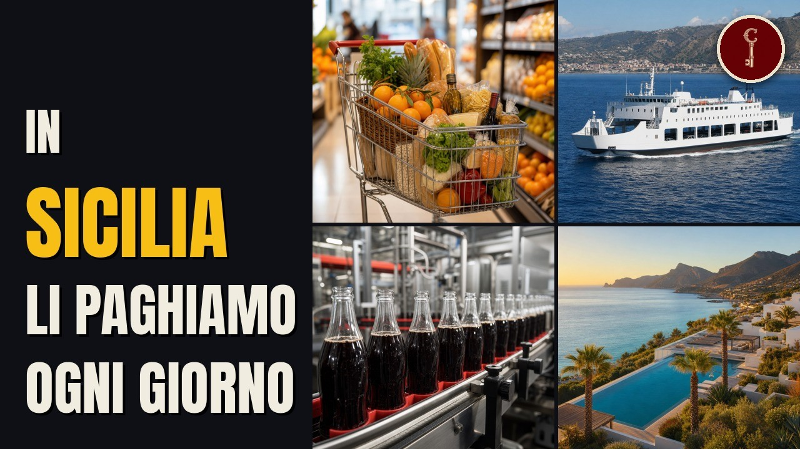

Sicilia
Le 13 famiglie siciliane più RICCHE (i loro marchi li conosci già)

Guarda il video su YouTubeFonti della ricerca
- Treccani DBI, Vincenzo Florio
- Treccani DBI, Ignazio Florio senior
- Treccani DBI, Ignazio Florio junior
- Franca Florio
- Balarm, i gioielli di Franca Florio
- Forbes Italia, miliardari 2026
- Mangia's, our story
- Sole 24 Ore 24/06/2026, bilancio Mangia's
- QdS 16/04/2024
- Wagner in Sicily
- Snewsonline, Strano
- CataniaNews, Strano
- money.it, le aziende di Catania per fatturato
- Strano in Expo
- Forbes Italia 2021, Dragotto
- Balarm, 60 anni Sicily by Car
- Comunicato Sicily by Car giugno 2026
- MF 24/4/2026, Sicily by Car ricavi 2025 e quotazione EGM
- Sibeg, storia
- Beverfood, Sibeg
- LiveSicilia, Busi presidente Confindustria Catania
- Il Sole 24 Ore, pagina sul Gruppo Rocchetta (feb 2025)
- Furnari Consulting, PaghiPoco
- Rocchetta srl, fatturato 2025
- Gruppo Franza, la storia
- Tourist Ferry Boat
- Caronte & Tourist, storia
- C&T bilancio di sostenibilità 2024
- QdS 20/7/2024
- Giornale di Sicilia, 29/11/2023, Sisa Sicilia
- Sisa Sicilia, azienda
- Sisa Sicilia spa, fatturato 2025
- LiveSicilia 2021, piazza Domenico Bruno
- LiveSicilia 2026, Crisafulli presidente Euronics
- Bruno spa, fatturato 2025
- Gruppo Romano, Bilancio di sostenibilità 2025
- Gruppo Romano, la storia
- Balarm 19/4/2024
- Balarm 2020, Famila
- Balarm 9/10/2026
- Di Martino Group, about us
- QdS 2023, Di Martino
- QdS 2025, F.lli Di Martino
- Balarm, Comer Sud
- Comer Sud spa, fatturato 2025
- Sole 24 Ore, Radenza e Coop
- BlogSicilia 2019
- BlogSicilia, Coop Sicilia
- Dissapore, i punti vendita del gruppo Radenza passano a Coop
- New FDM spa, fatturato 2025
- Sielte, bilancio di sostenibilità 2024
- RCR Wireless 1999
- LiveSicilia 2013, Alfio Turrisi
- LiveSicilia 2026, Sielte
- Sielte spa, fatturato 2025
- Dire 6/7/2026, centenario Sielte
- Balarm 24/2/2021, Gioachino Arena
- GDOWeek, dieci anni di Decò
- Fratelli Arena srl, fatturato 2025
- Balarm 16/7/2026
- Quotidiano di Ragusa, 21/7/2026, bilancio del gruppo Syneos
- Canadian Encyclopedia, Lino Saputo
- Saputo, our company
- Forbes, Lino Saputo
Attribuzioni di immagini e video
Florio winery (4894800110)
Michal Osmenda from Brussels, Belgium · CC BY-SA 2.0
.jpg){kind=link}
Michal Osmenda from Brussels, Belgium · CC BY-SA 2.0
Stabilimento Florio Favignana
Civa61 · CC BY-SA 3.0

Civa61 · CC BY-SA 3.0
Brucoli lighthouse
Boboseiptu · CC BY-SA 4.0

Boboseiptu · CC BY-SA 4.0
Palermo - Grand Hotel et des Palmes - ingresso - 01
Pvitale · CC BY-SA 3.0

Pvitale · CC BY-SA 3.0
Grand Hotel et des Palmes (Palermo) - Façade
HaguardDuNord · CC BY 4.0
_-_Fa%C3%A7ade.jpg){kind=link}
HaguardDuNord · CC BY 4.0
Fiat 1300
Lucarelli · CC BY-SA 3.0

Lucarelli · CC BY-SA 3.0
Stadio Renzo Barbera, 11 July 2024 - 11
SonoGrazy · CC BY-SA 4.0

SonoGrazy · CC BY-SA 4.0
Catania Via Etnea 2004
Peppe64 · CC BY-SA 3.0

Peppe64 · CC BY-SA 3.0
Porto di Licata da Castel Sant'Angelo
Davide Mauro · CC BY-SA 4.0

Davide Mauro · CC BY-SA 4.0
Traghetto Caronte & Tourist Tremestieri
Marinaio56 · CC BY-SA 4.0

Marinaio56 · CC BY-SA 4.0
Messina-panorama dal Campanile
Franc rc · CC BY-SA 3.0

Franc rc · CC BY-SA 3.0
Tourist Ferry Boat Terzo1
Ceppicone · CC BY 4.0

Ceppicone · CC BY 4.0
Messina Caronte & Tourist Elio (ship) RFI VIlla (ship)
Ad Meskens · CC BY-SA 4.0
_RFI_VIlla_(ship).jpg){kind=link}
Ad Meskens · CC BY-SA 4.0
Giuseppe Franza
Gio b06 · CC BY-SA 4.0

Gio b06 · CC BY-SA 4.0
Pietro Mondello
Capo Faro · CC BY-SA 4.0

Capo Faro · CC BY-SA 4.0
Il pilone di torre faro.ext
MarcoCrupi · CC BY-SA 3.0

MarcoCrupi · CC BY-SA 3.0
Carini Palermo
Maria Elena Ania · CC BY-SA 4.0

Maria Elena Ania · CC BY-SA 4.0
Piazza Carlo Alberto Catania (6021934412)
andrea · CC BY-SA 2.0
.jpg){kind=link}
andrea · CC BY-SA 2.0
Catania piazza Carlo Alberto
Peppe64 · CC BY-SA 3.0

Peppe64 · CC BY-SA 3.0
155 Museu de la Música, gramòfon
Enfo · CC BY-SA 3.0

Enfo · CC BY-SA 3.0
Caltanissetta - Cattedrale di Caltanissetta - 2023-09-27 10-28-18 001
Misasar · CC BY-SA 4.0

Misasar · CC BY-SA 4.0
-i---i- (8782989524)
andrea · CC BY-SA 2.0
.jpg){kind=link}
andrea · CC BY-SA 2.0
Modica Panorama - panoramio
Lamberto Zannotti · CC BY-SA 3.0

Lamberto Zannotti · CC BY-SA 3.0
Centro Commerciale Porta d'Orvieto Coop Centro Italia
Laura Rondini (on behalf of Daniele Mocco) · CC BY-SA 4.0

Laura Rondini (on behalf of Daniele Mocco) · CC BY-SA 4.0
Porto di Catania 2024
GiovanniPen · CC BY-SA 4.0

GiovanniPen · CC BY-SA 4.0
Presa Piedimonte Etneo
Goldmund100 (Luca Volpi) · CC BY-SA 3.0

Goldmund100 (Luca Volpi) · CC BY-SA 3.0
Loghi Decò, SuperConveniente
Multicedi srl, SuperConveniente · CC BY-SA 4.0; Marchio (uso informativo)

Multicedi srl, SuperConveniente · CC BY-SA 4.0; Marchio (uso informativo)
Valguarnera
Melo81 - Carmelo Parrinelli · CC BY 3.0

Melo81 - Carmelo Parrinelli · CC BY 3.0
Enna panorama dal castello - panoramio
Lamberto Zannotti · CC BY-SA 3.0

Lamberto Zannotti · CC BY-SA 3.0
Ragusa Ibla, Sicily
Chris Down · CC BY 4.0

Chris Down · CC BY 4.0
View of Ragusa Ibla from Ragusa Superiore - Sicily, Italy - 14 Oct. 2014
Paul Asman and Jill Lenoble · CC BY 2.0

Paul Asman and Jill Lenoble · CC BY 2.0
Baia di augusta
Davide Mauro · CC BY-SA 2.5

Davide Mauro · CC BY-SA 2.5
Montelepre005 (8427484770)
Missale P · CC BY-SA 2.0
.jpg){kind=link}
Missale P · CC BY-SA 2.0
Villa Igiea a Palermo lato giardino
Wolfgang Moroder · CC BY-SA 3.0

Wolfgang Moroder · CC BY-SA 3.0
Palazzo Natoli
Stendhal55 · CC BY-SA 4.0

Stendhal55 · CC BY-SA 4.0
Scene ricostruite
Alcune scene sono ricostruite con l'intelligenza artificiale (77 immagini e 2 clip). Non sono documenti né fotografie d'epoca.
Mappe
- Confini amministrativi italiani (openpolis/geojson-italy, dati ISTAT) · CC BY 4.0 · fonte